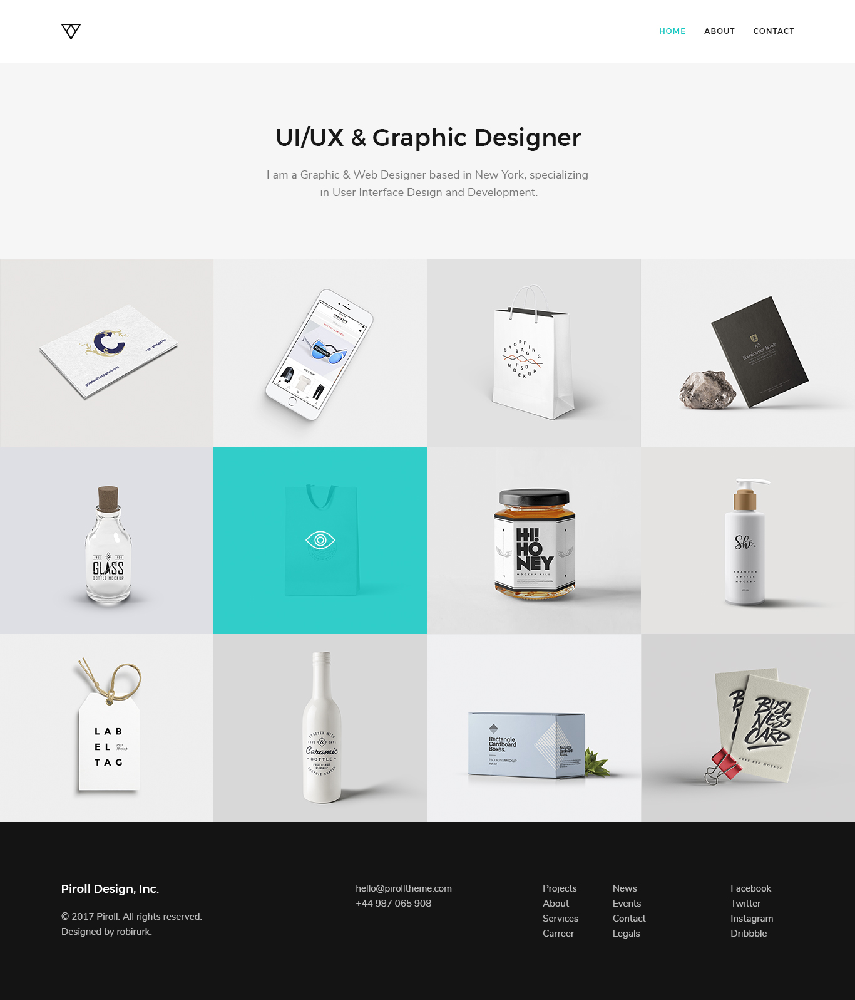

Proyecto Integrador 2018
VolverIntroducción
El objetivo de este proyecto integrador es combinar todos los conocimentos aprendidos durante el curso "Fundamentos del desarrollo web 2018" para hacer la entrega de una página web maquetada utilizando los últimos estandares de HTML5 y CSS3.
Accediendo al link para Descargar Template en la parte superior, encontrán los archivos originales (.psd) para poder utilizar de guía y los cuales deberán utilizar para exportar todo tipo de recurso gráfico necesario para el maquetado del sitio.
Objetivos
El proyecto consiste en maquetar 3 pantallas de un sitio web bajo la temática de un portfolio que el alumno podrá utilizar una vez entregado el proyecto como sitio web personal
A la derecha de este texto encontrán capturas hechas a cada una de las pantallas requeridas.
Estas mismas podrán encontrarlas también en el enlace al principio de esta sección
Se valorarán conceptos aprendidos relacionados a
- Semántica del contenido (HTML)
- Modularización de las hojas de estilo (CSS)
- Reutilización de código CSS como pueden ser las clases de css
.clase {}(para evitar repetir propiedades) - Inclusión de una familia tipográfica externa (fonts.google.com)
- Fondos de color hechos a través de CSS en lugar de imagenes de fondo repetidas
El proyecto deberá entregarse antes del 20/11/2018 enviandolo a la dirección de email diegomartinmarmol@gmail.com
Consideraciones
Obligatorias
- Presentar proyecto con al menos 3 páginas maquetadas dentro de una misma carpeta.
- Las imagenes de cada proyecto pueden ser propias
- Es obligatorio que haya 12 minaturas de proyectos (mínimo)
Opcionales
- No es necesario que el contenido este en ingles
- No es necesario que el contenido sea veridico y/o comprobable
- El desarrollador puede usar el sistema de iconos que prefiera (puede consultar una extensa lista en el sitio flaticon.com)
- De considearlo, el desarrollador puede reemplazar el logo del proyecto por su marca personal
- La navegación que aparece en la pantalla Detalle del Proyecto es opcional
-
Home (inicio)

-
Portfolio
 -
Detalle de proyecto